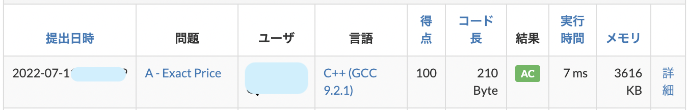

はじめに
みなさん、初めまして！古河中等教育学校パソコン部（通称: KSS PC Club）です。
私たちパソコン部は、その名の通り、パソコンで遊んだり、みんなで遊んだり、大会に出場するために練習をしたりコードを書いたりしている部活です。
初心者でも大歓迎です！さまざまな教材や、部活内の wiki、先輩たちの知識をもとに一からパソコンについて教えています。少しでもパソコンやプログラミングに興味のある方はぜひ、特別棟 2F 奥、パソコン室までお越しください！お待ちしています！
部長挨拶
はじめに
こんにちは。2022 年度 KSS PC Club 部長の Nagaso.cpp です。この度は私たちのページをご覧いただきありがとうございます。
ここでは、 パソコン部がどんな部活なのか、お話させていただきます。詳しい活動内容等については、活動内容をご覧ください。
KSS PC Club の特色
KSS PC Club の特色を一言で表すなら、「自由」だと思います。というのも、パソコン部ではほぼ全ての活動を個人に任せており、基本的に私や副部長からなにか干渉するということはありません。これには 2 つ理由があります。
「やってみたい！」を尊重する
パソコンといっても、その分野は多岐にわたります。例えば、ゲーム開発、Web 開発、ハードウェア自作、作曲、AI 開発などがありますね。分野の数だけ、部員の興味のベクトルも当然全く異なってきます。自分が興味がある分野と異なることばかりしていても、正直つまらないし、モチベーションの維持も難しいでしょう。そのため、部員ひとりひとりの「やってみたい！」を尊重し、自分の興味がある分野を最大限極められるようにしています。
誰にも負けない「強さ」を育む
私は有名タイトルの開発にもかかわるゲーム企業の採用担当の方と面談をしたことがあるのですが、その方が仰っていたのは、「企業が欲しがるのは、多用な分野を平均的にこなせる人材より、何か一つ尖った武器を持った人材。だから、ぜひ一つ極めてみるということをして欲しい」ということでした。個人に活動を任せることで、興味がある分野を極めることにとことん集中することができます。こうして培った技術は、当然ほかの分野にも生きますし、いつしか誰にも負けない強く尖った武器になります。そしてそれは、確固たる自信につながります。この武器があることで、将来の可能性が広がり、大学受験や就活においても有用です。
これは、KSS PC Club 創設から今日まで受け継がれる、ある種の伝統でもあります。そして、この「やってみたい！」をサポートする環境もパソコン部には備わっています。パソコン室の奥の棚には、多岐にわたる様々な分野の技術書が十数冊ほど用意されていて、必要に応じて活動の参考にすることができるほか、部員限定ではありますが貸し出しも行っています。また、開発の上で金銭が発生する、新しく技術書が欲しいなどの場合は、部費で購入することで金銭的負担を減らせるようにしています。
もちろん、統計グラフコンクールへの出展など、部全体で取り組んでいる活動もあり、都度学年を超えた関わりの中で成長することができます。
おわりに
いかがだったでしょうか。KSS PC Club の魅力が少しでも伝われば幸いです。もし興味があれば、お気軽に部員にお尋ねください。この後のページでは、部員数名で詳細な活動内容等の紹介を制作し掲載しています。よろしければそちらもご覧ください。これにて、部長挨拶とさせていただきます。
KSS PC Club 部長 Nagaso.cpp
リンク
私たち、KSS PC Club の運営するアカウントやサイトへのリンク一覧です。 ぜひご覧ください！
公式 web サイト

2020 年度より開設した公式 web サイトでは、活動内容や受賞歴、記事の発信などを行なっています。GitHub というサイトでコードを公開しており、各部員によってデザインやコーティングが行われています。
SNS アカウント
Github
公式 web サイトの項でも紹介した通り、部活内で作成したコードを共有、またインターネット上に公開するために運営しています。 一部の制作物のコードの閲覧および完成品の閲覧ができるのようになっているので、興味のある方はぜひご覧ください。
Youtube
現状コンテンツがありませんが、今後さまざまな動画を投稿していく予定です！
部活動の様子やお知らせを投稿していく予定です！
主な制作物
1. KSS Typing
プログラミングやコンピュータに関連する英単語を集めた 5 分間のタイピングゲームです。日々単語の追加などを行なっています。キーのタッチ位置を視覚的に表示するなど、初心者でもわかりやすいと好評です。 KSS PC Club では 1 年生がこのゲームでタイピングの練習を行なっています。
2. 文化祭待ち時間モニター

2019 年度/2022 年度の文化祭で、各模擬店の待ち時間を表示するために制作されたモニターです。各模擬店が待ち時間を入力すると、即座にモニター側に反映されるようになっており、模擬店側のアプリにはチャット機能や売り上げ管理機能が搭載されています。
3. 部誌

2022 年度から、KSS PC Club でも、部活動で学習したことや自分の好きなことを記事にする部誌の制作を開始しました。6 月に開催された文化祭に合わせて制作し、今年度は現役、OB 含め 7 名が執筆を担当しました。内容は多岐に渡り、数学やプログラミング言語、キーボード自作などさまざまです。ぜひご一読ください!
閲覧はこちらから!
| タイトル | Writer | |
|---|---|---|
| はじめに | Ryoga.exe | |
| この部誌を支える技術 | Ryoga.exe | |
| ICPC へのお誘い | Asa | |
| ワンクリック詐欺サイト解剖してみた | hnm876_md | |
| ニュートン法で近似をしよう | Anthony | |
| 基本/応用技術者試験合格体験記 | Anthony & Ryoga.exe | |
| キーボードが欲しかったので自作してみた | Nagaso.cpp | |
| プログラミング言語 Zig の基本文法 | eno1220 | |
| 始めよう、ArchLinux | 香風智乃 |
活動内容
概要
私たち、パソコン部では「パソコンで楽しむ」ことをモットーに活動しています。
統計グラフ、ゲーム/3DCG 制作、web 制作、web デザイン、自作 OS、キーボード自作、競技プログラミング、電子工作、数学、作詞作曲、イラスト制作など、パソコンでできること、関係すること全てを活動内容として認めています。毎日パソコン室では、多種多様な作業をしている人が見受けられます。
そのなかで、いくつか紹介していますので、以下の記事をご覧ください。
私たちの活動の特徴
私たちの活動の特徴として最も挙げられるのは、OB や引退された先輩方も在校生と共に活動をしているということだと思っています。多種多様な活動をしているので、同一学年に同じ活動をしているメンバーがいないこともあり、その場合は、先輩や後輩など学年間を超えて共に勉強したり、プロダクトを作ったりしています。
それを支えているのは、オンラインコミュニケーションツールの Discord や、コード共有サイトの GitHub です。KSS PC Club では家庭などからのオンライン参加を認めており、そのための設備も部室にセットしてあります。卒業された先輩方も Discord や GitHub に参加されているので、専門性の高い技術を質問したり、継承したりすることが可能になっています。また、活動外の時間、例えば休日や帰宅後などでも好きな時に部員同士が繋がることもできます。それらの取り組みが、活動の幅や質を高めていると考えています。
活動の様子
私たちは、部活の時間になると部室であるパソコン室に集合し、各自作業を始めます。協力してプログラミングの勉強をしたり、ゲームを作ったり、時にはおしゃべりをしたりゲームをプレイしたりしています。学年を超えた協力もみられ、時にはプログラミングや数学の講座が開かれることもあります。
毎年 7 月には前期生（1-3 年生）が「統計グラフコンクール」に参加しており、そのためにアンケートの制作や集計、グラフの制作やデザインなどを行います。これらは先輩方から受け継いで行き、毎年後期生（4、5 年生）が後輩たちに指導をしています。毎年、県や全国コンクールで優秀な成績を残している作品が生まれています。
毎年 10 月以降には、全国の高校生以下の最強のプログラマを決める「日本情報オリンピック」が開催されます。（詳細はこちら）この大会に参加するメンバーは一年を通して学習を進めており、先輩方から指導をいただくことも多くあります。
このように、部員みなで協力して、パソコンで楽しみつつ、さまざまなコンテストに参加してよい成績を残すため努力をしています。
活動を支えるために
私たちの活動は、部費によって購入されているさまざまな書籍や器具に支えられています。
（水曜日追記予定）
Web 制作
Web 制作って何？
プログラミングの活動分野にはさまざまなものがあり、アプリケーション制作、ゲーム制作、組み込みシステム、ロボット制作などさまざまなものがあります。KSS PC Club の中で、web 制作は主に、Web サイトを作ったり、リニューアルしたり、デザインしたり、コンテンツを追加することを指しています。
Web 制作の素敵なところ
なかなかイメージしにくいかと思いますので、web 制作の素敵なところを解説していこうと思います。
1. カンタン
そう、カンタンなのです。どれくらいカンタンなのか見てみましょう。
<!DOCTYPE html>
<head><meta charset="utf-8"></head>
<p>Hello,World!</p>
</html>

たったこれだけで、Hello,World!と Web サイトに反映させることができました！ メモ帳と web ブラウザだけあれば、これだけでプログラムを書くことができてしまいます。複雑な準備が必要な他の分野と比べてとっつきやすい分野になっています。
次の記事にある競技プログラミングのコードと比較して見ると明白ですね。（そ、そんな...（by 次の記事を書いた人））
2. 学びやすい
そう、学びやすいのです。上記のように、とっかかりがしやすく、さまざまな本が出版されており、KSS PC Club にもさまざまな本が置いてあります。また、多くの人がさまざまなところで教材を無料で提供してくれています。他の分野と比べて、教材にアクセスしやすいというメリットがあります。
3. すぐに成果が出る
そう、すぐに成果が出るのです。Web 制作はプログラムの書き方を学ぶだけで成果がすぐに出ます。 コンパイルが必要なく、ほぼラグなしに画面に製作したものが反映されるので、すぐに成果が見ることができて楽しいです。 数学的な考え方や深い知識が必要な他分野と比べて、入門のハードルは低いのではないでしょうか?
私たちの Web 制作について
私たちパソコン部でも Web 制作を行っていて、専用の Web サイトもあります。ぜひご覧ください。
競技プログラミング
競技プログラミングって何??
競技プログラミングは、与えられたの問題の答えを満たすプログラムを書く速さと正確性を競う競技です。例えば、以下のような問題があります。
高橋君の財布の中には 100 円硬貨が 1 枚以上入っており、それ以外には何も入っていません。
高橋君の財布の中の合計金額が X 円である可能性はありますか？
(AtCoder Beginner Contest223 A 問題より)
この問題の解法を考えてみましょう。 まず
- 高橋くんの財布の中には 100 円硬貨のみ入っているので、高橋くんの財布の中には 100 の倍数円入っていることがわかります。
- つまり、もし X が 100 の倍数なら可能性があり、そうでないなら可能性はないことがわかります。
- ただし、0 も 100 の倍数ですが、100 円硬貨は 1 枚以上あるので、X ＝ 0 の場合は可能性がありません。
以上のことをもとに、正しく回答するためのプログラムを作成し、提出をします。
#include "bits/stdc++.h"
using namespace std;
int main(){
int x;
cin >> x;
if(x % 100 == 0 && x != 0){
cout << "Yes" << endl;
}else{
cout << "No" << endl;
}
}
「AC」というのは正解していることを表しています。

他にもさまざまな解き方があると思いますが、なるべく早く正確に解いて提出することで順位が上がります。
興味を持った方のために、いくつか問題の例を置いておきます。
- when?
21 時ちょうどから x 分後の時刻を HH:MM の形式で答える問題（例:67 分後 →22:07） - Rolling Dice
6 面サイコロを a 回ふり、出た目の合計が b になることはあるか答える問題 - 移動(Moving)
ある 3 点間の移動を規定時間以内に行えるか答える問題
インターネット上などでは、このような問題が複数問集められ、回答数と回答速度で順位を競うコンテストが開催されています。多くの競技プログラマはコンテストに参加して、良い順位を目指して活動しています。
KSS PC Club での競技プログラミングへの取り組み
KSS PC Club の部員で競プロをやっている者の多くは、毎週末にインターネット上で開催される AtCoder 社主催のコンテストに参加しています。終了後、OB（大学生や 6 年生）も交えて、チャットアプリ上で感想を出し合ったり、問題の解説をしあったりしています。
また、毎年、高校生以下の最強競技プログラマを決定する大会である、JOI（日本情報オリンピック）に参加しています。なかなかに厳しい大会ですが、昨年は、本戦 B ランクという素晴らしい成績を収めた部員もいます。今年度も、本戦出場を目指して、日々精進しています。
おもな競技プログラミングのサイト
- AtCoder
日本最大の競技プログラミングコンテストのサイト - JOI（日本情報オリンピック)
- Aizu Online Judge
福島県立会津大学が運営する競技プログラミングのプ問題が集められたサイト
最後に
KSS PC Club ではさまざまな部員が競技プログラミング力の上達のため、日々精進しています。ぜひみなさんも競技プログラミングをやってみましょう！
ゲーム制作
ゲーム制作ってどうやるの？
基本的には、あるプログラミング言語と、＋ α でゲームエンジンやフレームワークと呼ばれるソフトウェアを用いて開発を行います。
最もメジャーなのは C#(プログラミング言語) と Unity(ゲームエンジン) の組み合わせで、実際のゲーム企業でも多く採用されています。
そのほかにも、C++(言語) と Siv3D(フレームワーク) 、Rust(言語) と Amethyst(ゲームエンジン) など様々な言語で開発ができるほか、Scratch のように、Web サイト上でゲーム開発ができるサービスも存在しています。Scratch はパズル感覚でプログラムを組むことができるため、初学者がプログラミングの基本を学ぶのにおすすめです。
Scratch でのゲーム開発例
これが Scratch の制作画面です。画面左のタブから命令を選び、中央で命令を組み合わせてプログラムを作ります。全ての命令が直観的にわかる名前になっているので、コードを書くプログラミングよりも格段にとっつきやすいと思います。どっかの競プロとは違うな！
いわゆる if 文や for 文などのプログラミングにおける基本的な構文はもちろん、ある程度高度なプログラムも実装することができます。やろうと思えばマイクラも作れるらしい...？
Scratch で培ったプログラムの書き方や文法は、当然ほかの言語での開発に大いに役立ってくれます。
(部員による作品「CAT のクソゲーシューティング」をお借りしました。)
KSS PC CLUB でのゲーム開発
多くの部員がゲーム開発に興味をもっており、特に Scratch での開発が盛んにおこなわれています。文化祭での作品展では、作ったゲームを展示する部員も多いです。
もちろん、Scratch 以外の言語を用いてゲーム開発にチャレンジしている部員も多くおり、音ゲーや弾幕ゲーの開発や、先述のゲーム開発用フレームワークアプリケーションである Siv3D の開発に関わる部員もいます。
終わりに
いかがだったでしょうか。PC 部では、ゲーム開発が盛んなこともあり、それに関する会話も多く飛び交い、時には教えあいながら成長しています。自分が興味を持った言語で、開発にチャレンジしてみましょう！
受賞歴
| 受賞内容 | 受賞日 | リンク |
|---|---|---|
| 第 21 回日本情報オリンピック(JOI 2021/2022)本戦出場/本戦 B ランク | 2022-02-13 | ホームページ |
| 令和 3 年度茨城県統計グラフコンクール茨城新聞社長賞 | 2022-01-20 | 作品 |
| 令和 3 年度下期基本情報技術者試験合格 | 2021-12-27 | |
| 令和 3 年度秋期応用情報技術者試験合格 | 2021-12-17 | |
| 第 21 回日本情報オリンピック(JOI 2021/2022)予選 A ランク 1 名/B ランク 3 名 | 2021-12-12 | |
| 令和 3 年度全国統計グラフコンクールパソコン統計グラフの部佳作 | 2021-11-16 | ホームページ |
活動詳細
活動日時
KSS PC Club は、月、水、金の放課後 16:20 から活動を行なっています。休日の活動は原則ありませんが、夏期講習期間中と夏休みのスクールバス運行期間中は例外として活動を行なっています。なお、夏休みの活動は任意です。
活動場所
KSS PC Club は、特別棟 2 階奥にあるパソコン室で活動をおこなっています。家庭からの参加も認めており、オンライン参加するための機能が部活内に存在しているので、家のパソコンで作業をしたい部員などは家から参加することがあります。いつでもメンバー間でチャットをすることが可能で、いつでもどこでも部活メンバーに質問したり雑談したりしています。
おわりに
KSS PC Club では、初心者から経験者まで、パソコンに興味がある方をいつでもお待ちしています。ぜひ、古河中等に入学し、私たちと共に活動しましょう！
ご覧いただきありがとうございました。